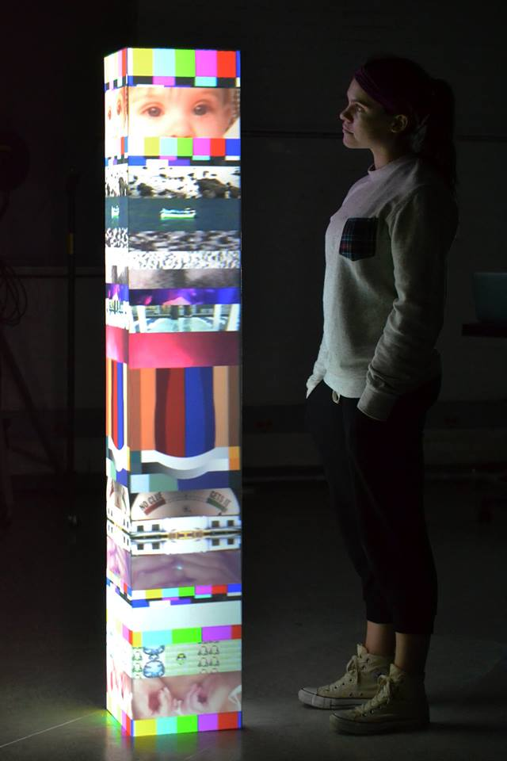

to mean it a little more and show it a little less
2015-ongoing video projection, plywood pedestal 63" x 10" x 10"A heavily abstracted, mostly redacted story. This video installation is an ongoing project to encapsulate each year of my life into a single moving image that is projected onto a 5’3” column. With each passing year, prior layers must condense to allow room for new memories. Eventually, even the years that feel the longest now will necessarily diminish in space and signifigance within the larger context of my experience.